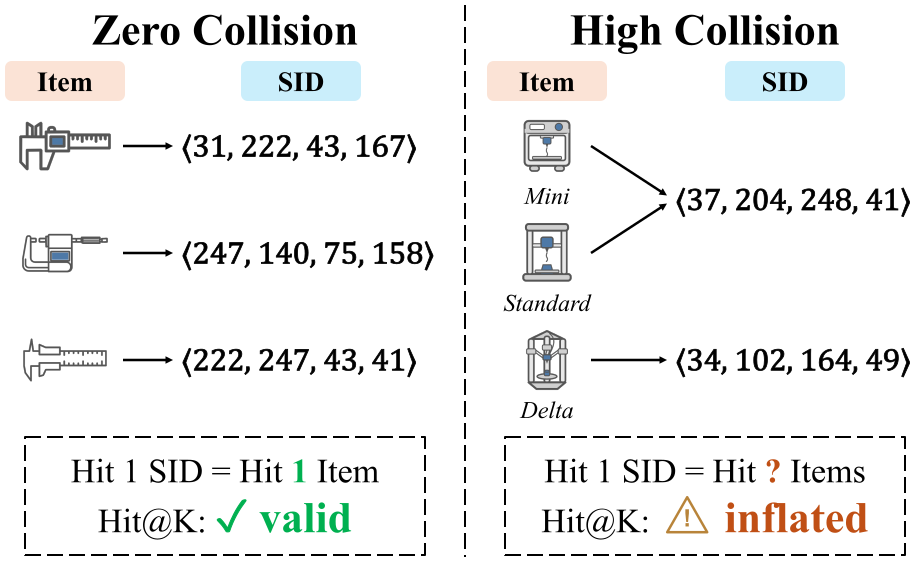
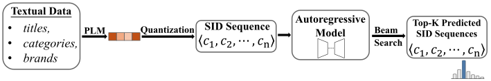
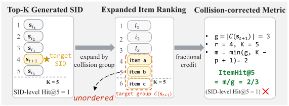
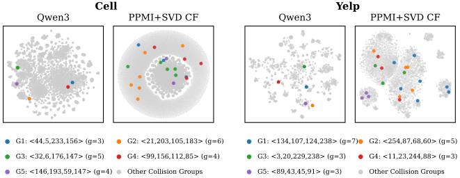
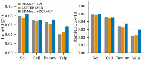

Abstract
Generative recommendation based on Semantic IDs (SIDs) represents each item as a discrete sequence of SIDs and is conventionally evaluated by matching the generated SID sequence against the target item’s SID sequence. This evaluation is faithful only when each SID sequence uniquely identifies one item. In practice, SID collisions violate this condition: across the evaluated SID tokenizers and datasets, collision rates reach 30.52%, and SID-level Hit@10 is inflated by up to 103.36% relative to item-level Hit@10. To address this evaluation gap, we introduce Collision-Corrected Evaluation (CCE), which defines collision-aware item-level metrics (ItemHit@$K$, ItemNDCG@$K$) computed from generated SID sequences, and Zero-Collision Reassignment (ZCR), which constructs zero-collision SID assignments for existing tokenizers via minimum-cost reassignment. Applying these methods to four datasets and five representative SID tokenizers, we find that metric inflation scales with collision rate and is large enough to flip pairwise tokenizer comparisons under item-level re-evaluation. This finding calls into question the reliability of SID-level rankings reported in prior work and indicates that faithful tokenizer evaluation requires item-level correction or zero-collision SID assignments.
One SID match ≠ one item hit
Background: SID-based generative recommendation.

Problem: SID collisions.
Different items can share one SID, forming a collision group. Hit@$K$ still counts a hit on that SID as a full item hit, so it overstates item-level accuracy and can favor tokenizers with more collisions.
Research questions.
Up to 30.52% of items share their SID
Scientific
Cell
Beauty
Yelp
Collision rate (share of items whose SID is shared with at least one other item) and size of the largest collision group Gmax. Bars use a common scale up to 30.52%.
65 Starbucks, one SID
On Yelp, 65 Starbucks locations share the same name and categories (“Food, Coffee & Tea”), so both tokenizers map them to one SID, the largest collision group in our study. Given that SID, no model can tell which Starbucks the user visited.
CCE corrects the metric; ZCR removes the collisions
- Collision-Corrected Evaluation (CCE) turns SID-level hits into item-level credit, without retraining.
- Zero-Collision Reassignment (ZCR) gives every tokenizer a collision-free SID assignment at minimum cost, so no tokenizer gains from collisions.
1. CCE: count hits per item, not per SID

CCE replaces each generated SID with its collision group, so the ranked SIDs become a ranked list of items. If the target SID is at rank $r$ and its group has $g$ items, the group occupies positions $p$ to $p+g-1$, after the items of the groups ranked above it, and $m$ of them fall inside the top $K$. The target could be any of the $g$ items, so CCE gives it credit $m/g$:
In the figure, $K=5$, $r=4$, $g=3$, and $m=2$. Try other cases below.
Try it: SID hit vs. item hit
2. ZCR: remove collisions at minimum cost
ZCR keeps each item’s first $L-1$ codes and reassigns only the last one. Collisions can then only occur within a prefix group $\mathcal{P}(\mathbf{p})$, the items sharing prefix $\mathbf{p}$, so each group is solved on its own. Here $\rho_{\mathbf{p}}$ is the number of items that must be reassigned, and $D[i,c]$ is the cost of giving item $i$ last-level code $c$:
ZCR then reassigns exactly $\rho_{\mathbf{p}}$ items so that no two items share a code, at the lowest total cost:
The Hungarian algorithm solves each group exactly. The result is collision-free whenever every prefix group fits in the codebook ($V = 256$ codes per level), which holds on all four datasets.
Show Algorithm 1 (pseudocode)
\begin{algorithm}
\caption{Zero-Collision Reassignment}
\begin{algorithmic}
\REQUIRE Native SID assignment $\{\mathbf{s}_i\}_{i \in \mathcal{I}}$; last-level residuals $\{\mathbf{r}_i^{(L-1)}\}_{i \in \mathcal{I}}$; last-level codebook $\{\mathbf{e}_c^{(L)}\}_{c=1}^{V}$
\ENSURE Reassigned SIDs $\{\hat{\mathbf{s}}_i\}_{i \in \mathcal{I}}$; collision-free if $\max_{\mathbf{p}} |\mathcal{P}(\mathbf{p})| \le V$
\STATE Initialize $\hat{\mathbf{s}}_i \gets \mathbf{s}_i$ for all $i \in \mathcal{I}$
\STATE Compute $D[i, c] \gets \|\mathbf{r}_i^{(L-1)} - \mathbf{e}_c^{(L)}\|^2$ for all $i \in \mathcal{I}$, $c \in \{1,\ldots,V\}$
\STATE Partition items by native $(L-1)$-prefix: $\mathcal{P}(\mathbf{p}) \gets \{i : \mathbf{s}_i^{1:L-1} = \mathbf{p}\}$
\FOR{each prefix group $\mathcal{P}(\mathbf{p})$}
\STATE $\rho_{\mathbf{p}} \gets |\mathcal{P}(\mathbf{p})| - |\{s_i^{(L)} : i \in \mathcal{P}(\mathbf{p})\}|$
\IF{$\rho_{\mathbf{p}} = 0$ \textbf{or} $|\mathcal{P}(\mathbf{p})| \gt V$}
\STATE \textbf{continue}
\ENDIF
\STATE Obtain $\{\hat{s}_i^{(L)}\}_{i \in \mathcal{P}(\mathbf{p})}$ by solving the problem above on $\mathcal{P}(\mathbf{p})$
\ENDFOR
\RETURN $\{\hat{\mathbf{s}}_i\}_{i \in \mathcal{I}}$
\end{algorithmic}
\end{algorithm}
Try it: which item should be reassigned?
Drag an item (dot), or select it and then click where it should go or use the arrow keys. Each item is natively assigned its nearest code; items on the same code collide. Both methods reassign the same number of items but differ in which items they reassign and to which codes. Greedy, the rule used in MQL4GRec[1], retains the item nearest to each shared code and reassigns the others to their nearest unused codes; ZCR selects the assignment that minimizes the total cost increase $\sum \Delta D$ over the prefix group. Costs are squared distances in the drawing, scaled so that the first preset, the paper’s case study (RK-Means on Beauty), reproduces its $\Delta D = 20.65$ vs. $13.76$.
Results
RQ1–2: Up to 103% inflation, enough to flip tokenizer rankings
| Dataset | Tokenizer | Coll. (%) | H@10 | IH@10 | Infl. (%) |
|---|---|---|---|---|---|
| Scientific | RK-Means | 30.52 | 0.1330 (best) | 0.0654 | 103.36 |
| RQ-VAE | 20.42 | 0.1147 | 0.0665 | 72.48 | |
| LETTER[2] | 1.24 | 0.0804 | 0.0767 (best) | 4.82 | |
| QuaSID[3] | 5.41 | 0.0768 | 0.0749 | 2.54 | |
| Cell | RK-Means | 28.52 | 0.0830 (best) | 0.0524 | 58.40 |
| RQ-VAE | 14.04 | 0.0702 | 0.0574 | 22.30 | |
| LETTER | 3.39 | 0.0673 | 0.0628 | 7.17 | |
| QuaSID | 3.25 | 0.0684 | 0.0656 (best) | 4.27 | |
| Beauty | RK-Means | 21.58 | 0.0818 (best) | 0.0547 | 49.54 |
| RQ-VAE | 8.52 | 0.0693 | 0.0576 | 20.31 | |
| LETTER | 1.07 | 0.0664 | 0.0610 | 8.85 | |
| QuaSID | 0.59 | 0.0663 | 0.0644 (best) | 2.95 | |
| Yelp | RK-Means | 15.73 | 0.0415 | 0.0313 | 32.59 |
| RQ-VAE | 9.05 | 0.0393 | 0.0340 | 15.59 | |
| LETTER | 8.59 | 0.0457 (best) | 0.0405 (best) | 12.84 | |
| QuaSID | 6.23 | 0.0400 | 0.0369 | 8.40 |
Coll.: collision rate · H@10: SID-level Hit@10 · IH@10: item-level ItemHit@10 (CCE) · Infl.: H@10 / IH@10 − 1 · Bold: best per datasetInflation grows with the collision rate, and RK-Means ranks first by Hit@10 but last by ItemHit@10 on Scientific, Cell, and Beauty.
RQ3: ZCR removes collisions and improves all tokenizers
| Tokenizer | Variant | Scientific | Cell | Beauty | Yelp |
|---|---|---|---|---|---|
| RK-Means | native | 0.0421 | 0.0383 | 0.0335 | 0.0191 |
| +ZCR | 0.0579↑37.4% | 0.0516↑34.6% | 0.0403↑20.5% | 0.0217↑13.7% | |
| RQ-VAE | native | 0.0468 | 0.0446 | 0.0365 | 0.0215 |
| +ZCR | 0.0585↑25.0% | 0.0497↑11.6% | 0.0386↑5.6% | 0.0230↑7.0% | |
| LETTER | native | 0.0524 | 0.0474 | 0.0372 | 0.0240 |
| +ZCR | 0.0571↑9.0% | 0.0496↑4.6% | 0.0389↑4.5% | 0.0263↑9.5% | |
| QuaSID | native | 0.0544 | 0.0490 | 0.0392 | 0.0221 |
| +ZCR | 0.0567↑4.1% | 0.0496↑1.4% | 0.0402↑2.5% | 0.0240↑8.6% | |
| MQL4GRec[1] | built-in | 0.0426 | 0.0453 | 0.0361 | 0.0219 |
| RK-Means | native | 0.0654 | 0.0524 | 0.0547 | 0.0313 |
| +ZCR | 0.0812↑24.1% | 0.0694↑32.4% | 0.0662↑21.1% | 0.0347↑11.1% | |
| RQ-VAE | native | 0.0665 | 0.0574 | 0.0576 | 0.0340 |
| +ZCR | 0.0800↑20.4% | 0.0657↑14.4% | 0.0608↑5.6% | 0.0361↑6.0% | |
| LETTER | native | 0.0767 | 0.0628 | 0.0610 | 0.0405 |
| +ZCR | 0.0791↑3.1% | 0.0660↑5.0% | 0.0625↑2.5% | 0.0442↑9.0% | |
| QuaSID | native | 0.0749 | 0.0656 | 0.0644 | 0.0369 |
| +ZCR | 0.0789↑5.3% | 0.0663↑1.0% | 0.0645↑0.2% | 0.0381↑3.2% | |
| MQL4GRec[1] | built-in | 0.0606 | 0.0596 | 0.0570 | 0.0353 |
| RK-Means | native | 0.0282 | 0.0277 | 0.0213 | 0.0123 |
| +ZCR | 0.0429↑52.0% | 0.0400↑44.4% | 0.0255↑19.7% | 0.0141↑14.5% | |
| RQ-VAE | native | 0.0315 | 0.0336 | 0.0239 | 0.0141 |
| +ZCR | 0.0445↑40.9% | 0.0391↑16.2% | 0.0252↑5.7% | 0.0148↑5.4% | |
| LETTER | native | 0.0361 | 0.0355 | 0.0239 | 0.0155 |
| +ZCR | 0.0443↑22.9% | 0.0388↑9.1% | 0.0256↑7.1% | 0.0168↑8.2% | |
| QuaSID | native | 0.0391 | 0.0367 | 0.0254 | 0.0142 |
| +ZCR | 0.0438↑12.1% | 0.0388↑5.5% | 0.0263↑3.7% | 0.0154↑8.2% | |
| MQL4GRec[1] | built-in | 0.0324 | 0.0359 | 0.0235 | 0.0141 |
| RK-Means | native | 0.0357 | 0.0322 | 0.0281 | 0.0163 |
| +ZCR | 0.0504↑41.0% | 0.0457↑41.9% | 0.0338↑20.3% | 0.0183↑12.7% | |
| RQ-VAE | native | 0.0379 | 0.0378 | 0.0306 | 0.0181 |
| +ZCR | 0.0514↑35.6% | 0.0442↑17.0% | 0.0324↑5.6% | 0.0190↑5.2% | |
| LETTER | native | 0.0439 | 0.0405 | 0.0315 | 0.0208 |
| +ZCR | 0.0514↑17.1% | 0.0440↑8.8% | 0.0331↑5.2% | 0.0225↑8.3% | |
| QuaSID | native | 0.0457 | 0.0421 | 0.0334 | 0.0189 |
| +ZCR | 0.0509↑11.5% | 0.0441↑4.8% | 0.0341↑2.0% | 0.0199↑5.1% | |
| MQL4GRec[1] | built-in | 0.0382 | 0.0405 | 0.0302 | 0.0184 |
Arrow: relative gain of +ZCR over the native tokenizer · built-in: MQL4GRec is collision-free by design · Mean of 3 seeds; per-cell std 0.0001–0.0032 (median 0.0011)Gains are largest where native collision rates are highest.
ZCR reassigns at 8–19% lower cost than greedy
| Tokenizer | Dataset | Items reassigned | $\sum \Delta D$ greedy | $\sum \Delta D$ ZCR | Reduction |
|---|---|---|---|---|---|
| RK-Means | Scientific | 875 | 38,864 | 35,674 | ↓8.21% |
| Cell | 8,519 | 276,488 | 252,486 | ↓8.68% | |
| Beauty | 1,574 | 63,409 | 55,678 | ↓12.19% | |
| Yelp | 2,029 | 41,689 | 38,074 | ↓8.67% | |
| RQ-VAE | Scientific | 535 | 9.64 | 8.39 | ↓12.95% |
| Cell | 4,017 | 324.64 | 279.06 | ↓14.04% | |
| Beauty | 827 | 71.39 | 57.97 | ↓18.80% | |
| Yelp | 2,574 | 46.45 | 40.22 | ↓13.40% |
Greedy: MQL4GRec’s nearest-codeword rule · Reduction: relative drop in $\sum \Delta D$ from greedy to ZCR · MQL4GRec itself is omitted (already collision-free)Both methods reassign the same number of items; ZCR lowers the total cost increase $\sum \Delta D$ by choosing which items to reassign and to which codes.
Where do collisions come from?

Does adding collaborative signals help?

Experimental setup and dataset statistics
- Datasets: Amazon Scientific (Industrial and Scientific), Cell (Cell Phones and Accessories), and Beauty, plus Yelp; 5-core filtering and leave-one-out split. Item text: title, description, brand, and categories (Amazon); business name and categories (Yelp).
- Tokenizers: RK-Means[4], RQ-VAE (TIGER[5]), LETTER[2], QuaSID[3] (reproduced from the paper), and MQL4GRec[1] as a zero-collision reference. All use the same Qwen3-Embedding-8B text embeddings and SIDs of length $L=4$ over a codebook of size $V=256$.
- Generator: the same T5 model for every tokenizer, trained from scratch (4 encoder/decoder layers, $d_{\text{model}}=128$, 6 heads); beam width 20.
| Dataset | #Users | #Items | #Inter. | Avg. Len. | Sparsity |
|---|---|---|---|---|---|
| Scientific | 8,317 | 4,344 | 58,492 | 7.03 | 99.84% |
| Cell | 154,778 | 47,593 | 1,109,257 | 7.17 | 99.98% |
| Beauty | 22,363 | 12,101 | 198,502 | 8.88 | 99.93% |
| Yelp | 30,431 | 20,033 | 316,354 | 10.40 | 99.95% |
Q&A
Why not just append an extra code (TIGER) or use greedy reassignment (MQL4GRec)?
ZCR is a post-tokenizer step: it works on existing tokenizers without retraining them, at minimum reassignment cost. The alternatives change what is being compared: TIGER[5] appends a non-semantic code that makes every SID longer, and greedy reassignment (MQL4GRec[1]) costs more, with ZCR lowering the total reassignment cost by 8–19%. ZCR keeps the SID length, so each tokenizer is compared close to its native assignment.
Why does CCE give uniform credit within a collision group?
A generated SID identifies only its collision group, and SID generation alone cannot order the items inside it. CCE therefore gives the target credit $m/g$, the mean Hit@$K$ over its $g$ possible positions in the group. With one target per test case, this is a collision-corrected Recall@$K$, and it reduces to the standard Hit@$K$ and NDCG@$K$ when $g = 1$.
Where do ZCR’s gains come from?
Both variants train the same generator and are scored with CCE. With native SIDs, a hit on a collision group receives only fractional item-level credit; ZCR makes matched target SIDs unique, so these hits receive full credit. This is why gains are largest for the tokenizers with the most native collisions, RK-Means and RQ-VAE.
How do I apply CCE or ZCR to my own tokenizer?
CCE needs only saved beam outputs and the item-to-SID table, so existing runs can be re-scored without retraining. ZCR needs the tokenizer’s last-level residuals and codebook; it runs after quantization, in negligible time relative to tokenizer training in our experiments, and the generator is then retrained on the new SIDs. To compare tokenizers, use both: with CCE alone, each generator is still trained on native SIDs that contain collisions. Code and pre-built SID indexes are in the repository.
What are the limitations?
- Items in one collision group receive uniform credit (see above); popularity- or context-aware credit could refine this.
- ZCR’s zero-collision guarantee needs every prefix group to fit in the last-level codebook, $\max_{\mathbf{p}} |\mathcal{P}(\mathbf{p})| \le V$. This held in all our experiments; when it fails, enlarging $V$ or adding multimodal item features is the most direct solution.
- Experiments use public Amazon and Yelp data and one generator architecture, which keeps the tokenizer the only moving part; the size of the inflation and the ranking flips may differ on larger industrial datasets.
Citation
@inproceedings{zhang2026faithful,
title = {Faithful Evaluation of {Semantic-ID} Tokenizers for Generative Recommendation},
author = {Zhang, Qian and Szymanski, Lech and Deng, Jeremiah D. and Zhang, Haibo},
booktitle = {Proceedings of the 35th ACM International Conference on Information and Knowledge Management (CIKM '26)},
year = {2026},
address = {Rome, Italy},
publisher = {ACM},
doi = {10.1145/3799682.3841124}
}
References
- Zhai et al. Multimodal Quantitative Language for Generative Recommendation. ICLR 2025.
- Wang et al. Learnable Item Tokenization for Generative Recommendation. CIKM 2024.
- Hu et al. Stop Treating Collisions Equally: Qualification-Aware Semantic ID Learning for Recommendation at Industrial Scale. arXiv 2026.
- Luo et al. QARM: Quantitative Alignment Multi-Modal Recommendation at Kuaishou. CIKM 2025.
- Rajput et al. Recommender Systems with Generative Retrieval. NeurIPS 2023.